Visual test gallery
Solo piano
Ballade No. 3 in A-flat major
Frédéric Chopin
Op. 47 · Allegretto · 6/8
Read the opening page of the Ballade, from the quiet exchange between the hands to the answering octaves. The score retains the small left-hand ossia and the edition’s fingering and pedal signs.

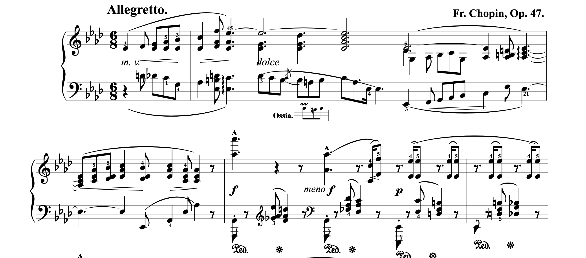
Keyboard
Minuet in G major
Christian Petzold
G major · 3/4
From the Notebook for Anna Magdalena Bach. Two independent keyboard voices share a grand staff, with mordents in the melody, hairpins between the hands and pedal marks beneath the bass.

Jazz lead sheet
When the Saints Go Marching In
Traditional African American spiritual
C major · 4/4
Compare traditional and reharmonized changes over the same melody. Follow the held “in” as its lyric extender crosses a system break.
Compare harmony Rendering testView codeAbout the tune About reharmonization
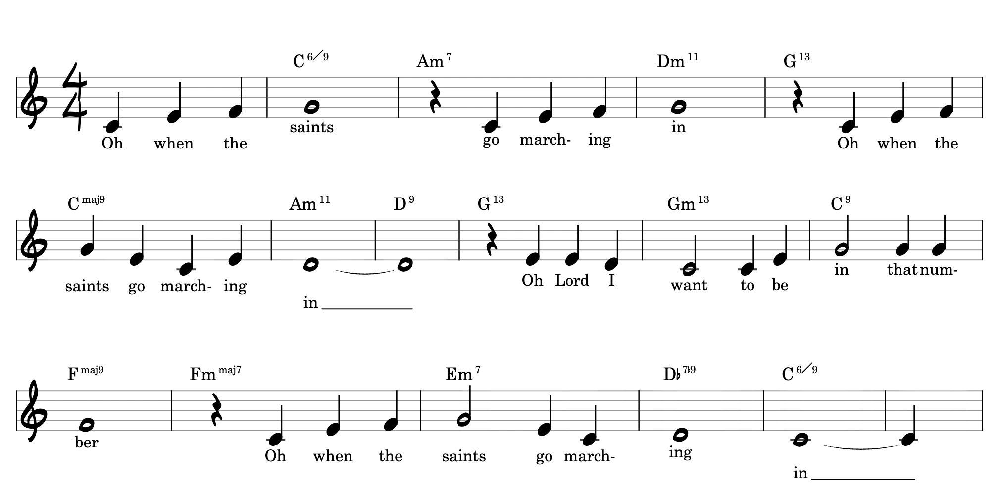
Guitar tablature
Greensleeves
Traditional English air
A minor · 3/4
Follow the chord names above the melody. Dm/F puts F in the bass, and the closing E5 voicing uses just E and B. Roll that last chord from bass to treble.

Keyboard
Prelude in C major
Johann Sebastian Bach
BWV 846 · C major · 4/4
Eight bars of BWV 846 in an editorial two-hand distribution. Select one sixteenth and follow it between the staves as the systems reflow.
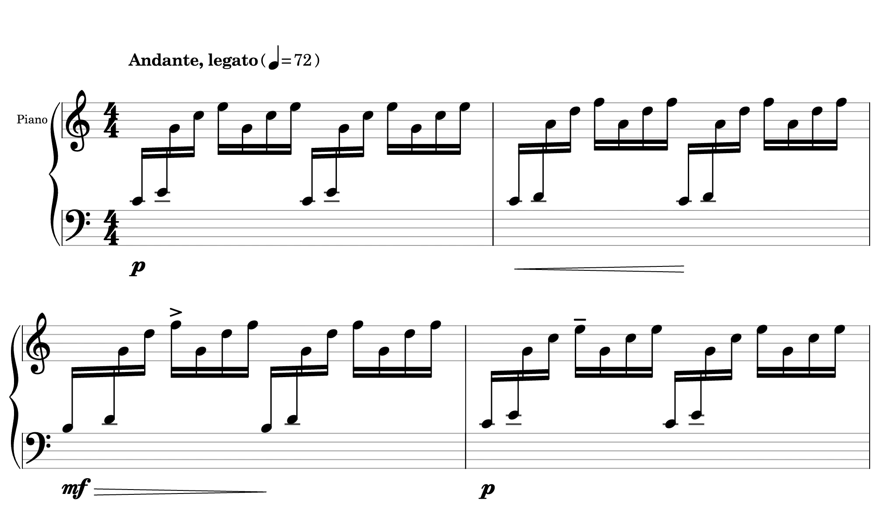
Keyboard fugue
Fugue No. 6 in D minor
Johann Sebastian Bach
BWV 851 · Book I · 3/4
Follow the subject through three voices in the opening eight bars. Boxed entries guide the eye as the bass takes up the theme beneath the running sixteenths.
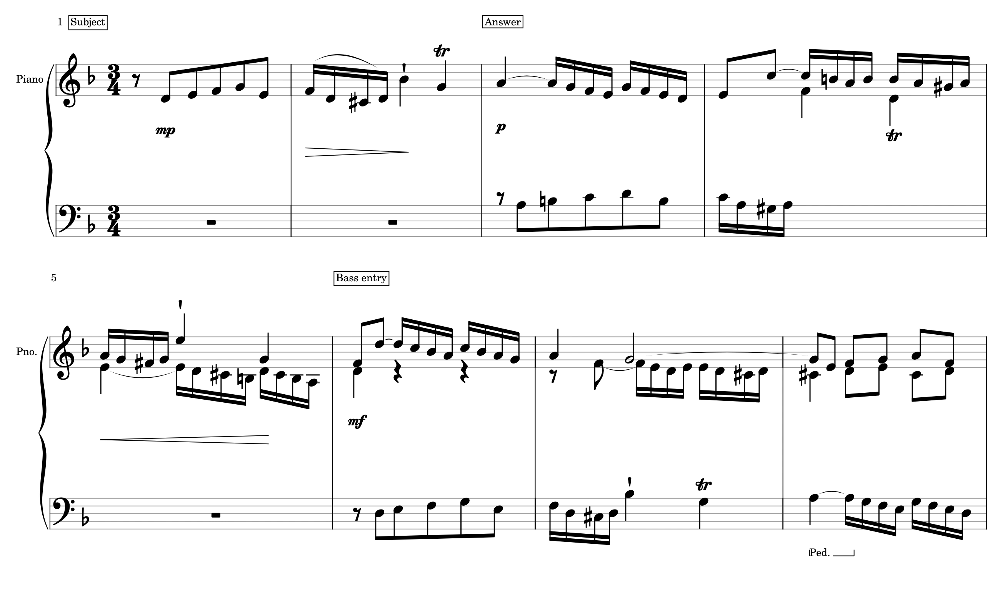
Fiddle
The Kesh Jig
Traditional Irish jig
G major · 6/8
Follow the chord changes and slurred eighths through two strains. The fiddle’s second ending cues the flute into the trio.
Score and printable parts Session chartView codeAbout the tune
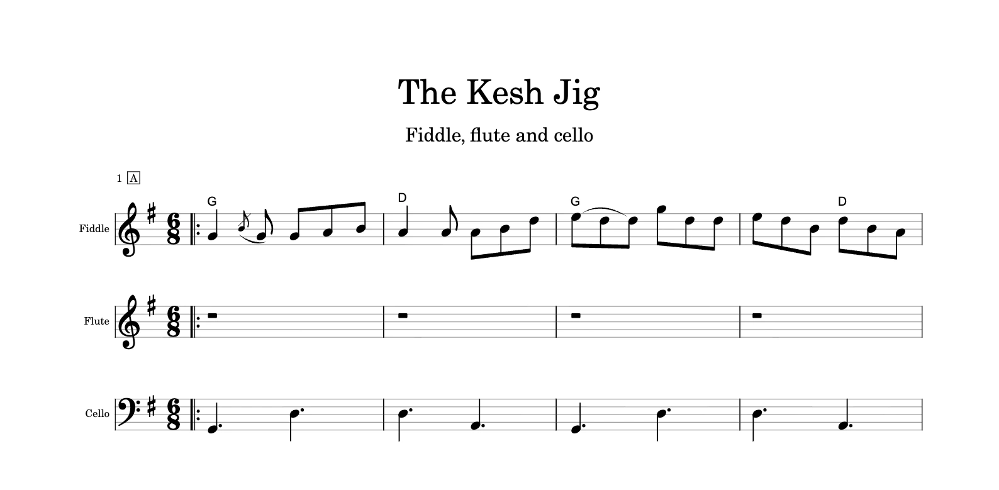
Cello duet
Ode to Joy
Ludwig van Beethoven
Symphony No. 9 · D major · 4/4
Two cellos trade weight across the phrase. Give the opening note its full length, then follow the crescendo into each cadence.
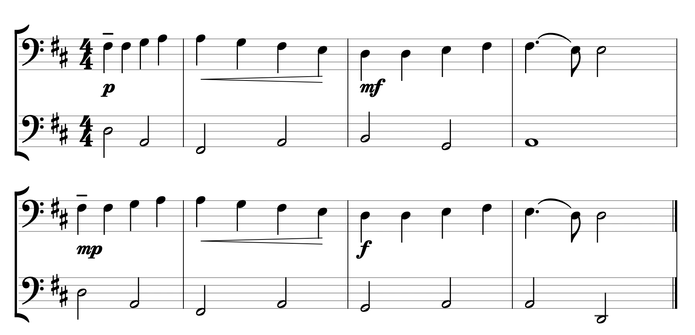
Electric guitar
High Wire
Example piece
Drop D · 2/4
In this eight-bar Drop D riff the low string stays muted under ringing dyads. Tap the upper line, then bend into unison with the stationary E.
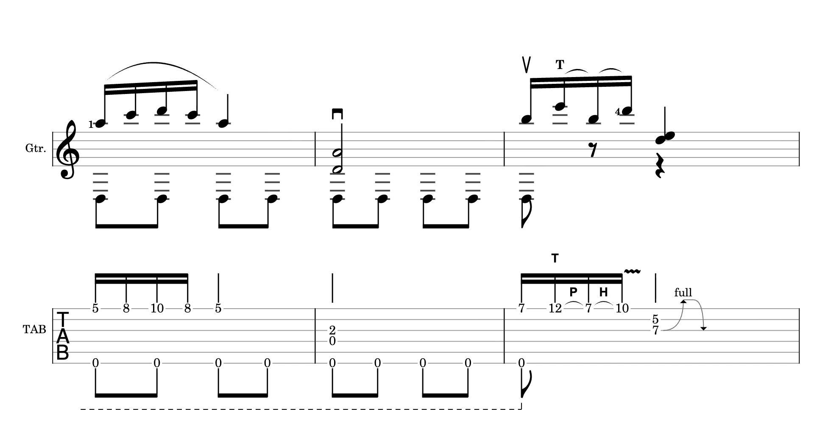
Drum set
Pocket Change
Example piece
Funk · 4/4
The kick keeps its own rhythm under the hats. Inspect the shared snare and hi-hat attack, then follow the triplet fill down the toms.
Inspect the backbeat Rendering testView code Drum notation key
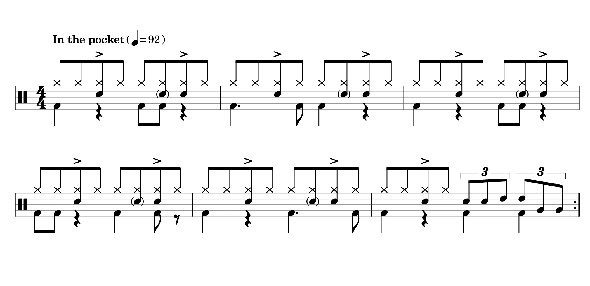
Solo viola
Narrow Steps
Example piece
24-tone equal temperament · 5/8
Read the viola motif first with individual quarter-tone signs, then under its two-sign signature. Find the cancellation and the courtesy accidental.
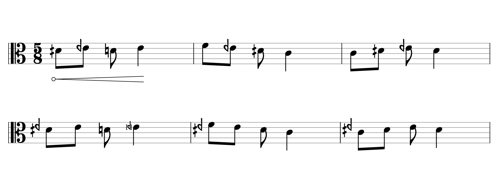
Flamenco guitar
Patio al alba
Example piece
E Phrygian · 4/4
A melodic call leads into measured finger strokes, a simultaneous golpe and a freely rolled final chord.
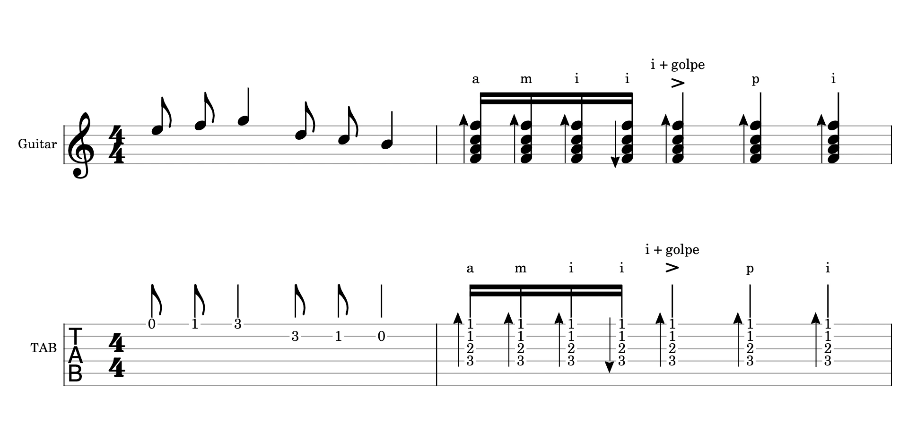
Vocal ensemble
Sumer is icumen in
Anonymous · 13th century
Four singers and two bass parts · 6/8
Sing the opening softly, swell into the next phrase, and ornament the cuckoo call. Switch to the ensemble to follow the staggered entrances.
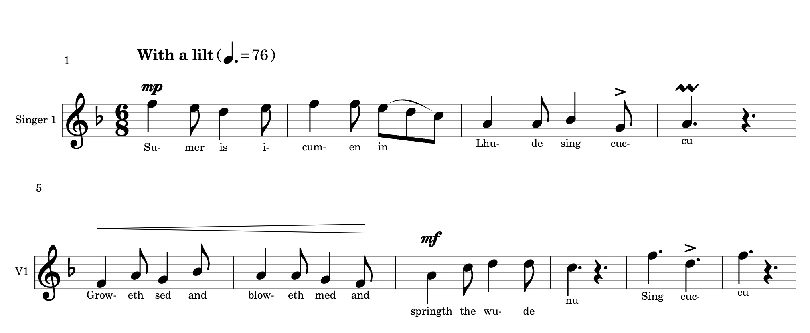